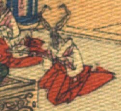

海老のような化物。頭部は薄茶色で、頭頂から1対の節足が生えている。体に白い着物と赤い袴をまとい、女官のような装束で、座っている。両袖で銚子を持っている。
著作者：J.Dautremer／出典：親書誌：U426_nichibunken_0118：Monseigneur sac de riz／日付：2006／資源識別子：U426_nichibunken_0118_0003_0024
Copyright (c)2010- International Research Center for Japanese Studies, Kyoto, Japan. All rights reserved.